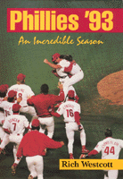

<body bgcolor="#FFFFFF" text="#000000" link="#0000FF" vlink="#CC0000" alink="#CC0000"><center><hr width="350" size="1" align="center" noshade>Relive the Phillies 1993 experience<hr width="350" size="1" align="center" noshade><p><a href="https://cdcshoppingcart.uchicago.edu/Cart/ChicagoBook.aspx?ISBN=9781566392310&&PRESS=temple" target="_top">Buy this book!</a> | <a href="https://cdcshoppingcart.uchicago.edu/Cart/Cart.aspx?PRESS=temple" target="_top">View Cart</a> | <a href="https://cdcshoppingcart.uchicago.edu/Cart/Cart.aspx?PRESS=temple" target="_top">Check Out</a></p><p></p></center><!--none//--><h1>Phillies '93</h1>
<H2> An Incredible Season</H2>
<h3>Rich Westcott</h3>
<P>paper 1-56639-231-4 $29.95, Mar 94, <FONT COLOR=#990033>Available</FONT>
<BR> 224 pp
7x10
50&nbsp;tables 104&nbsp;halftones
</P><ul><li><p>Descriptions of the players, manager, and front office personnel
<li><p>Over 100 photographs of the season's highlights
<li><p>Complete '93 statistics and selected box scores
<li><p>Post-season game-by-game summaries</ul>
<p>The 1993 Phillies had more winning games than all but two Phillies teams in the club's 111-year history, and highly talented and entertaining top-ranking players like Lenny Dykstra, John Kruk, Darren Daulton, Curt Schilling, and Mitch Williams. The Phillies enjoyed sweet victories over their toughest competitors, the St. Louis Cardinals, the Montreal Expos, and the Atlanta Braves.
<p>A follow-up to <I>The New Phillies Encyclopedia</I>, which Allen Lewis of the Baseball Hall of Fame called "the finest and most complete book about any team in sports," <I>Phillies '93</I> covers the spectacular plays, outstanding performances, and thrilling victories of the 1993 Phillies season.
<p>Author Rich Westcott, a veteran sports writer, traces the evolution of one of the most colorful teams in Phillies history, from the off-season roster decisions, through spring training, the ups and downs of the championship season, and culminating in an in-depth look at what happened on and off the field during the National League Championship Series and World Series.
<BR>&nbsp;<h2>Excerpt</h2><P>Excerpt available at <a href="http://www.temple.edu/tempress">www.temple.edu/tempress</a></p>
<BR>&nbsp;<h2>Contents</h2><P>
<p>Foreword
<br>1. Gypsies, Tramps and Thieves: Who are These 1993 Phillies?
<br>2. Wheeling and Dealing: Fitting the Pieces Together with Trades and Other Deals
<br>3. Hope Springs Eternal: Spring Training Makes the Phillies Optimistic
<br>4. A Torrid Beginning: A Record Start and a Big First-Half Lead
<br>5. It's Finally Our Turn: Second Half Ends with the East Division Title
<br>6. America's (New) Team: The Phillies Win the National League Pennant
<br>7. An Unpleasant Ending: Toronto Blue Jays Win the World Series
<br>8. The Aftermath: Phillies Make Some Off-Season News
<br>9. One More Look: Box Scores, Statistics and Summaries
<br>About the Author, Acknowledgments
</P><BR>&nbsp;<H2>About the Author(s)</H2>
<table><tr><td valign="top"><img src="/tempress/authors/1166_au.gif" height="90" width="75"></td><td width="100%" valign="middle"><p><b>Rich Westcott</b> is the editor and publisher of<I> Phillies Report</I>, the co-author (with Frank Bilovsky) of <I><a href="987_reg.html" target="_top">The New Phillies Encyclopedia</a></I> (Temple), and the author of <I>Diamond Greats</I>.</P></td></tr></table>
<BR><H2>Subject Categories</H2>
<p><A HREF="/tempress/sports.html" TARGET="_top">Sports</a>
<BR><A HREF="/tempress/general.html" TARGET="_top">General Interest</a>
</p>
<p align="center"><a href="https://cdcshoppingcart.uchicago.edu/Cart/ChicagoBook.aspx?ISBN=9781566392310&&PRESS=temple" target="_top">Buy this book!</a> | <a href="https://cdcshoppingcart.uchicago.edu/Cart/Cart.aspx?PRESS=temple" target="_top">View Cart</a> | <a href="https://cdcshoppingcart.uchicago.edu/Cart/Cart.aspx?PRESS=temple" target="_top">Check Out</a></p><p><font face="Arial" size="1"><a href="copyright.html" onMouseOver="window.status='Web Copyright Policy';return true;" onMouseOut="window.status=''" title="Web Copyright Policy">&copy;</a> 2015 <a href="http://www.temple.edu" target="new" onMouseOver="window.status='Link to Temple University home page';return true;" onMouseOut="window.status=''" title="Link to Temple University home page">Temple University</a>. All Rights Reserved. http://www.temple.edu/tempress/titles/1166_reg.html</font></p>